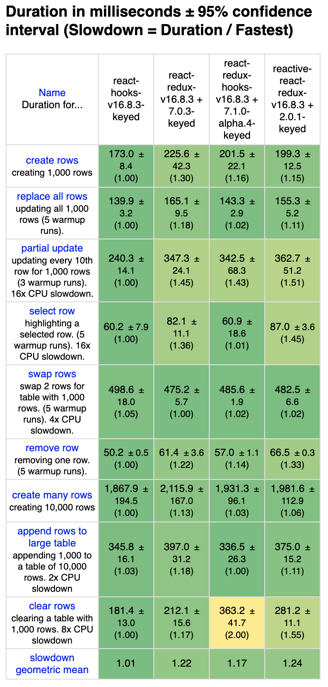
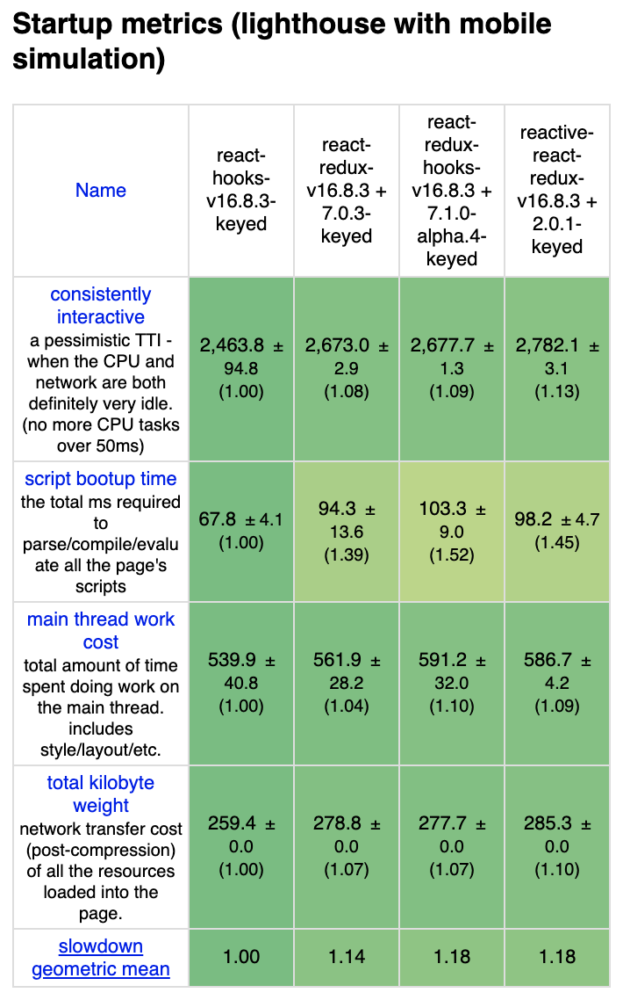
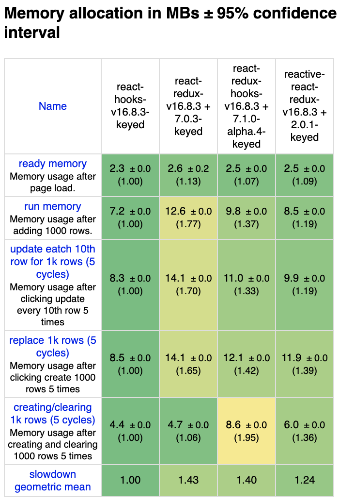

Introduction
Recently, React Redux released hooks API. It’s v7.1.0-alpha.4 as of writing.
https://github.com/reduxjs/react-redux/releases/tag/v7.1.0-alpha.4
On the other hand, I’ve been developing a new React Redux binding library with hooks and Proxy.
https://github.com/dai-shi/reactive-react-redux
It’s time to benchmark both of them to have better understanding in performance. The reactive-react-redux library utilizes Proxy to auto-detect state usage, hence it technically has overhead which would affect performance. We would like to learn how much it will be affected in a realistic example.
As a benchmark tool, js-framework-benchmark is used. For comparison, bare react-hooks implementation and connect-based react-redux implementation are also included.
Benchmark results
The following is the results of four implementations. Please refer the tool doc for detailed information.



The react-hooks result is basically the best (with some exceptions) because its implementation is basic without Redux. The react-redux-hooks result is pretty good and sometimes better than the react-redux result. The reactive-react-redux result is mostly OK and notably it’s relatively good in memory allocation.
The code at a glance
Let’s quickly look at the code. The following is from react-redux-hooks benchmark code.
const Row = React.memo(({ i }) => {
const selector = useCallback((state) => {
const item = state.data[i];
return state.selected === item.id ? { id: item.id, label: item.label, selected: true } : item;
}, [i]);
const { selected, id, label } = useSelector(selector);
const dispatch = useDispatch();
const onSelect = useCallback(() => {
dispatch(select(id));
}, [dispatch, id]);
const onRemove = useCallback(() => {
dispatch(remove(id));
}, [dispatch, id]);
return (
<tr className={selected ? "danger" : ""}>
<td className="col-md-1">{id}</td>
<td className="col-md-4"><a onClick={onSelect}>{label}</a></td>
<td className="col-md-1"><a onClick={onRemove}>{GlyphIcon}</a></td>
<td className="col-md-6"></td>
</tr>
);
});
const InnerRowList = React.memo(({ data }) => {
return data.map((item, i) => <Row key={item.id} i={i} />);
});
const RowList = () => {
const data = useSelector(state => state.data);
return <InnerRowList data={data} />;
};
You may find that it uses React.memo several times, which is to optimize without connect.
The following benchmark code is for reactive-react-redux.
const Row = React.memo(({ item, selected }) => {
const { id, label } = item;
const dispatch = useReduxDispatch();
const onSelect = useCallback(() => {
dispatch(select(id));
}, [dispatch, id]);
const onRemove = useCallback(() => {
dispatch(remove(id));
}, [dispatch, id]);
return (
<tr className={selected ? "danger" : ""}>
<td className="col-md-1">{id}</td>
<td className="col-md-4"><a onClick={onSelect}>{label}</a></td>
<td className="col-md-1"><a onClick={onRemove}>{GlyphIcon}</a></td>
<td className="col-md-6"></td>
</tr>
);
});
const InnerRowList = React.memo(({ data, selectedId }) => {
return data.map((item, i) => <Row key={item.id} item={item} selected={selectedId === item.id} />);
});
const RowList = () => {
const state = useReduxState();
const data = state.data;
const selectedId = state.selected;
return <InnerRowList data={data} selectedId={selectedId} />;
};
Due to the nature that useReduxState in reactive-react-redux doesn’t take a selector, the code structure is slightly different. It passes an item object and a selected flag, instead of an i index, to the Row component. This code style is similar to that of react-hooks benchmark code.
For concrete benchmark code, refer the repo.
Conclusion so far
For this benchmark, the alpha hooks API in React Redux is already performant as is. The useSelector hook is straightforward for transition from connect.
The result for reactive-react-redux shows comparable performance. The overhead of Proxy should be tolerable for non intensive use cases. The coding style is different from react-redux, so it should be seen not as a replacement of react-redux, but as a new coding style with React hooks and Redux. Because it’s similar to bare react-hooks benchmark code, it could be more intuitive and fit well for people who newly learn Redux.